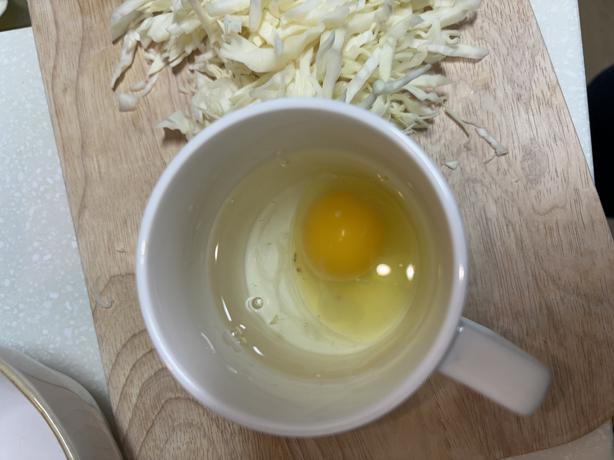
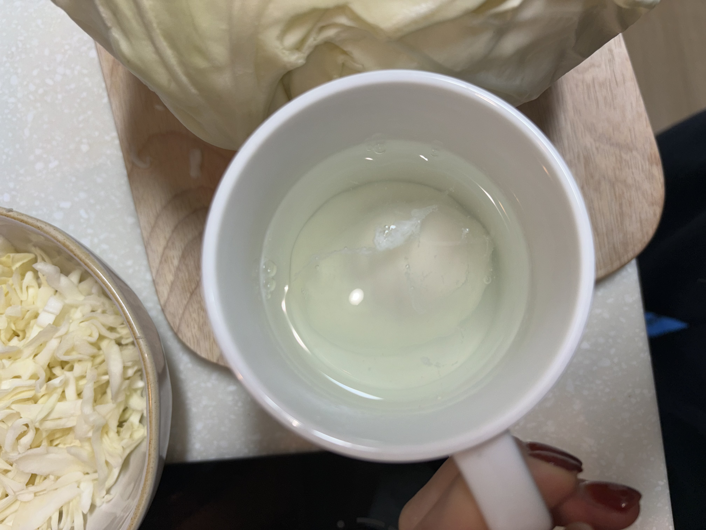
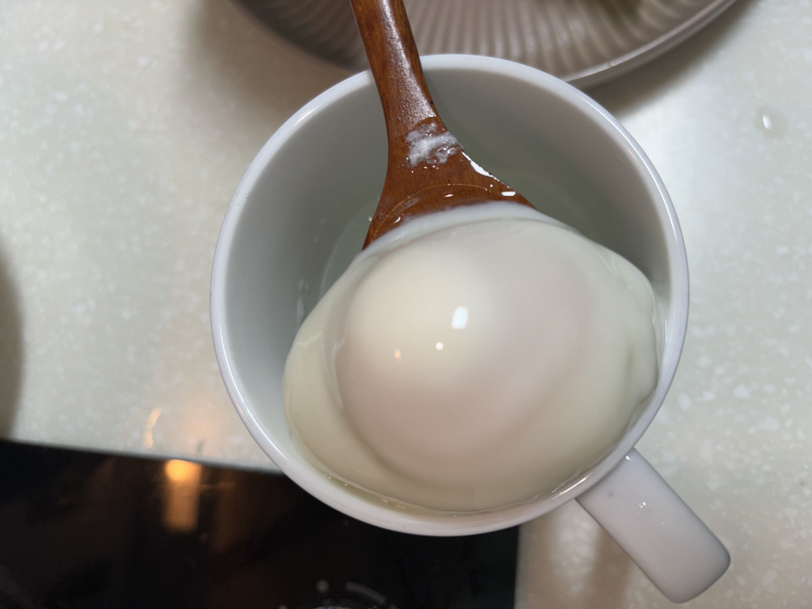

- < 재료 >
-
통밀 깜빠뉴
양상추
계란 1개
아보카도
크림치즈
올리브유
소금
후추
파슬리(선택)
- 잘 후숙된 아보카도를 반으로 잘라서 얇게 채썰어준다.
- 컵에 물을 넉넉히 담고 계란을 까서 수란이 될 때까지 전자레인지에 돌린다.
   - 빵에 크림치즈를 얇게 펴발라준다.
- 크림치즈 위에 아보카도를 올리고, 양상추와 수란도 올려준다.
- 올리브유, 소금, 후추, 파슬리를 기호에 맞게 뿌려준다.
- 완성~